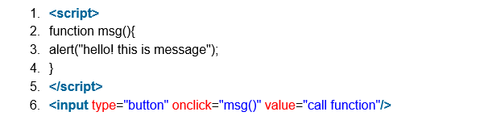
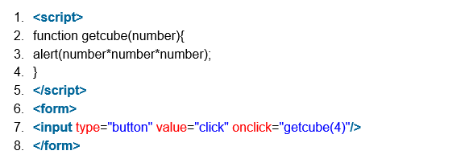
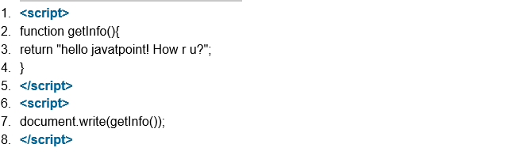
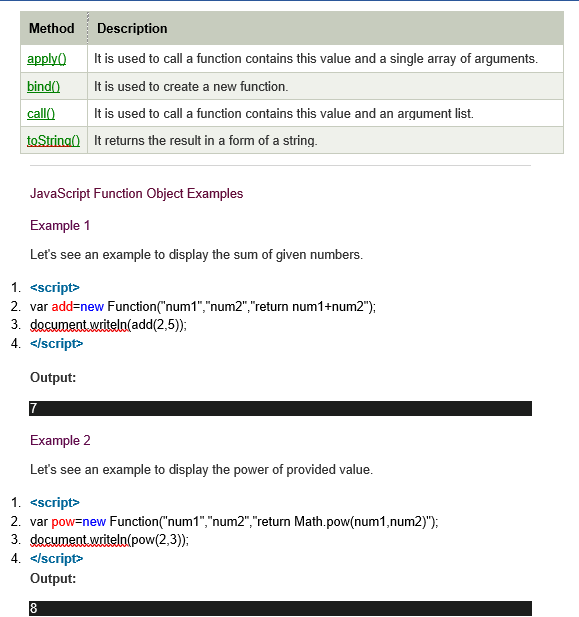

Java Script Functions
JavaScript functions are used to perform operations. We can call JavaScript function many times to reuse the code.
Advantage of JavaScript function
There are mainly two advantages of JavaScript functions.
1. Code reusability: We can call a function several times so it save coding.
2. Less coding: It makes our program compact. We don’t need to write many lines of code each time to perform a common task.
JavaScript Function Syntax
1. var 123=30;
2. var *aa=320;
Example of JavaScript variable
The syntax of declaring function is given below.
1. function functionName([arg1, arg2, ...argN]){
2. //code to be executed
3. }
JavaScript Functions can have 0 or more arguments.
JavaScript Function Example
Let’s see the simple example of function in JavaScript that does not has arguments.

JavaScript Function Arguments
We can call function by passing arguments. Let’s see the example of function that has one argument.

Function with Return Value
We can call function by passing arguments. Let’s see the example of function that has one argument.

JavaScript Function Object
In JavaScript, the purpose of Function constructor is to create a new Function object. It executes the code globally. However, if we call the constructor directly, a function is created dynamically but in an unsecured way.
Syntax
1. new Function ([arg1[, arg2[, ....argn]],] functionBody)
Parameter
arg1, arg2, .... , argn - It represents the argument used by function.
functionBody - It represents the function definition.
JavaScript Function Methods
Let's see function methods with description.
